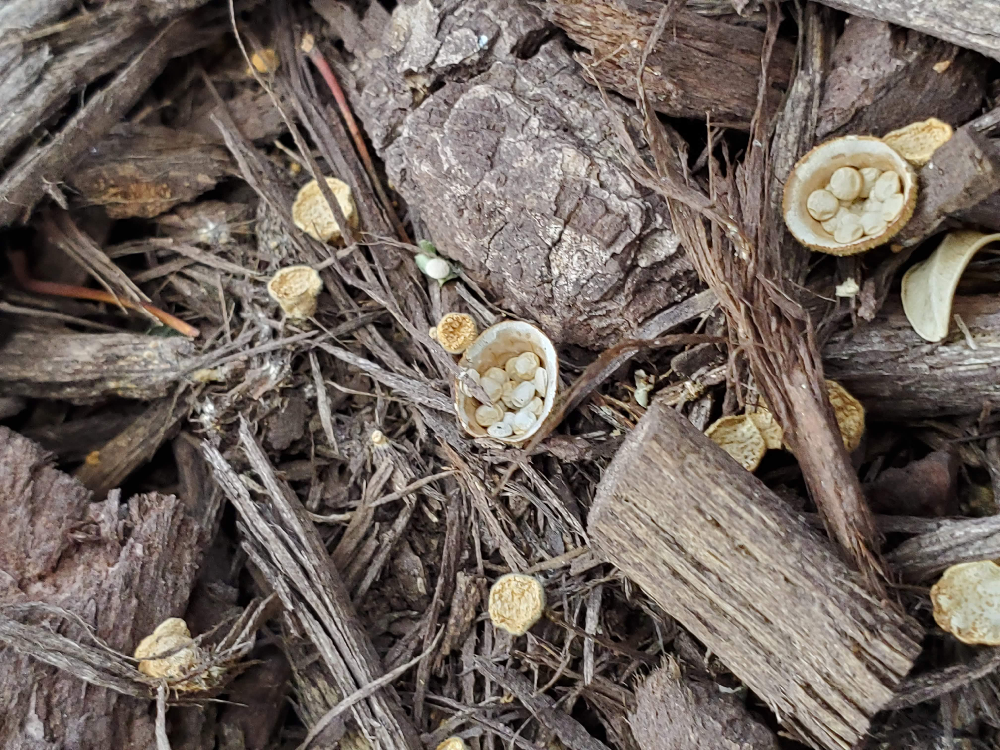

Look for different types of mushrooms or fungi that
I haven't seen before and take a picture of it. I recently started keeping a folder of the different
mushrooms I have found outside.
Play Animal Crossing, Mario, and Pokemon on my
Nintendo Switch.
Learn about random science and technological ideas,
such as dark matter, time travel, AI, and systems
These are my mushroom findings:
This mushroom is known as the mower's mushrooms
as it is common on lawns or brown hay mushrooms. I found these little guys outside
by my kids playground. They can be identified with having brown tops and lighter body's.
It goes back and forth on whether they are edible, but unless your an expert, I'd
probably pass on a taste.

These little miniature egg nests are fungi. They feed on
decomposing organic matter so you'll find them around decaying wood or mulch. Which
is where I found these little nests. It's interesting how different fungi can look.
These fungi were found on a bench at a local park.
They looked like dried lily pads stickered onto this bench. So I whipped out my phone
and googled them, and what do you know, its a Green Shield Lichen. Whatever that means right?
Well these fungi like to hang around bark and switch it up with an occasional rock.
They are edible, though again, maybe save it for another time.